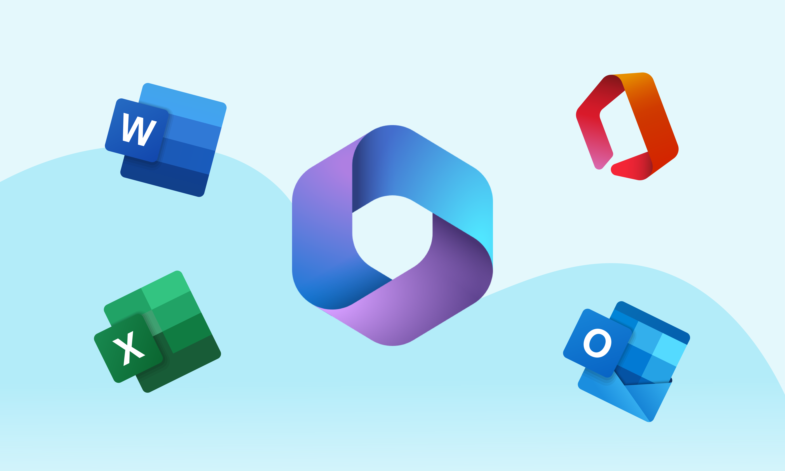
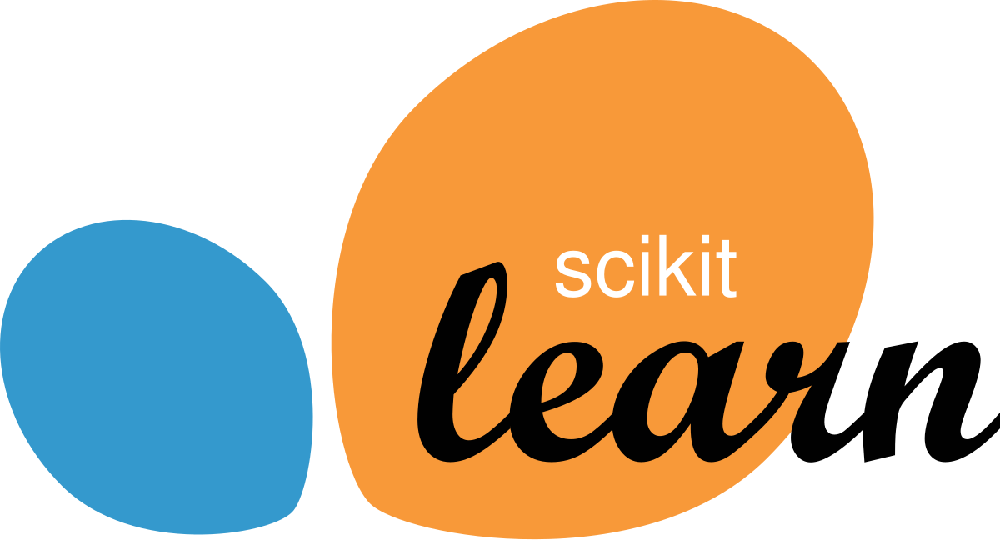
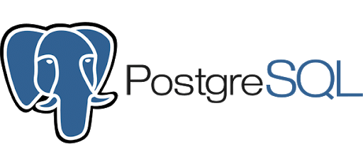
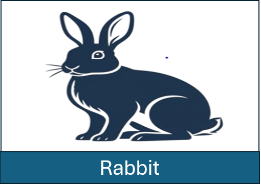
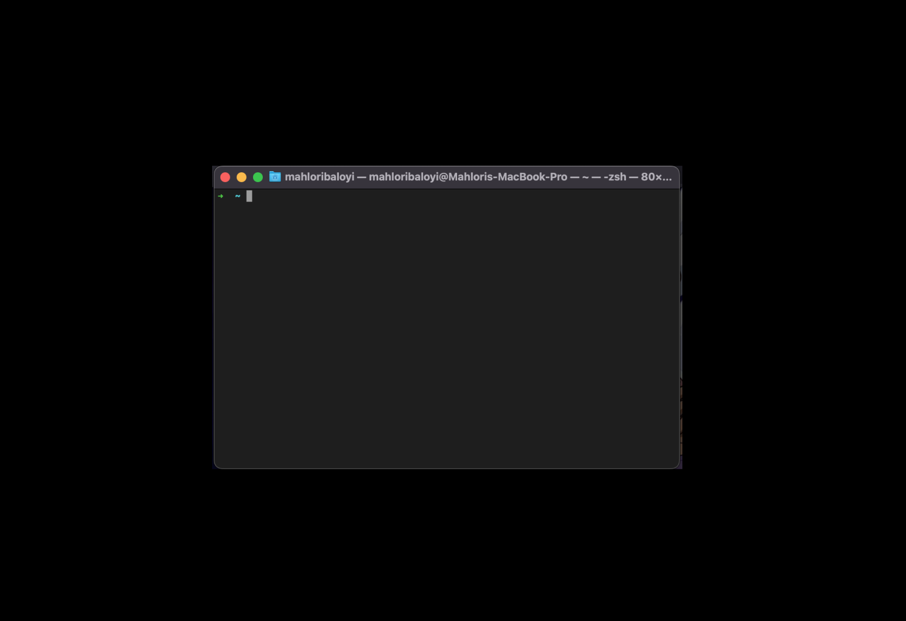

Credit risk case study
A lender scenario on public data: where default concentrates, whether a model beats simple rules, and the operational changes that follow.
Read the caseI find where financial workflows break, then design the system that fixes them.
I help organisations improve business processes, reporting and decision-making by turning operational and financial data into practical systems and actionable insights.
My experience spans telecommunications, financial operations, reporting environments and data-driven application development. I combine analytical thinking, systems development and business understanding to identify inefficiencies, automate workflows and build solutions that improve accuracy and operational performance.
If you can represent something numerically, mathematics can give you the tools to find structure in it.




A lender scenario on public data: where default concentrates, whether a model beats simple rules, and the operational changes that follow.
Read the case
Turns client bank statements into ledger-ready transactions, replacing manual capture into Caseware for a small accounting practice.
Read the case
Recurring missing-document follow-up in fiduciary operations: the pattern in the data and where process improvement could start.
Read the case